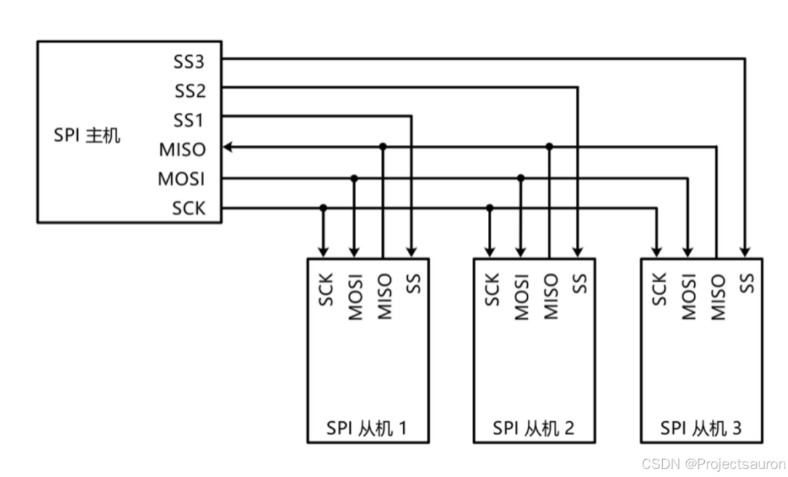
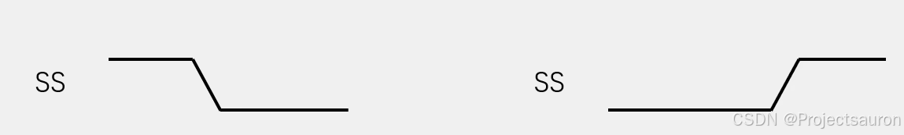
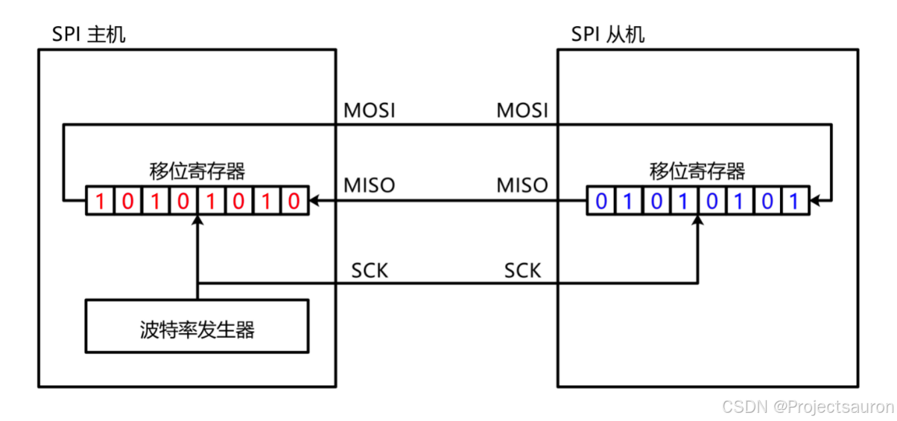
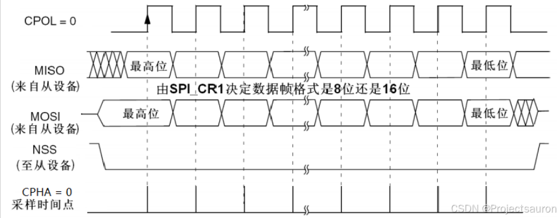
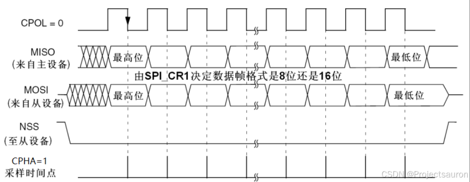
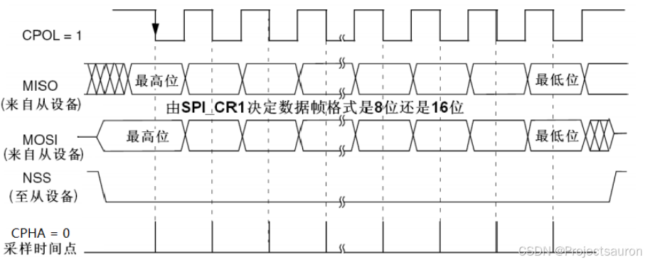
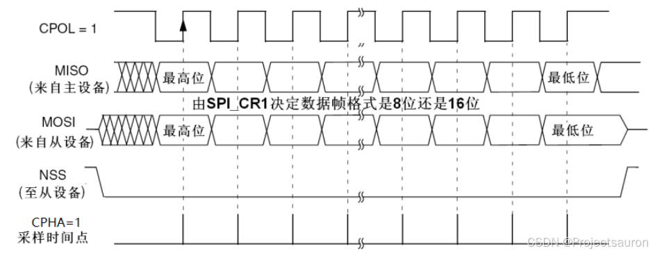

SPI 通信协议详解
[toc]
一、概述
SPI（Serial Peripheral interface，串行外围设备接口） 通信协议是 Motorola 公司首先在其MC68HCXX 系列处理器上定义的。SPI 接口是一种高速的全双工同步的通信总线，已经广泛应用在众多 MCU、存储芯片、AD 转换器和 LCD 之间。
由 SPI 连成的串行总线是一种三线同步总线，总线上可以连接多个可作为主机的 MCU，装有 SPI 接口的输出设备，输入设备如液晶驱动、A/D 转换等外设，也可以简单连接到单个 TTL 移位寄存器的3芯片。总线上允许连接多个能作主机的设备，但在任一瞬间只允许有一个设备作为主机。总线的时钟线 SCK 由主机控制，另外两根分别是：主机输入/从机输出线（MISO）和主机输出/从机输入线（MOSI）。下图就是 SPI 总线的典型结构图：

系统可以简单，也可以复杂，主要有以下几种形式：
- 一台主机 MCU 和若干台从机 MCU。
- 多台 MCU 互相连接成一个多主机系统。
- 一台主机 MCU 和若干台从机外围设备。
二、SPI 详解
1、基本信息
1.1 SPI 的引脚信息
- MISO（Master In / Slave Out）主设备数据输入，从设备数据输出。
- MOSI（Master Out / Slave In）主设备数据输出，从设备数据输入。
- SCLK（Serial Clock）时钟信号，由主设备产生。
- CS（Chip Select）从设备片选信号，由主设备产生。
其他制造商可能会遵循其他命名规则，但是最终他们指的相同的含义。以下是一些常用术语，
- MISO 也可以是
SIMO、DOUT、DO、SDO或SO（在主机端）； - MOSI 也可以是
SOMI、DIN、DI、SDI或SI（在主机端）； - CS 也可以是
CE、NSS或SSEL； - SCLK 也可以是
SCK。
1.2 SPI 的工作原理
在主机和从机都有一个串行移位寄存器，主机通过向它的 SPI 串行寄存器写入一个字节来发起一次传输。串行移位寄存器通过 MOSI 信号线将字节传送给从机，从机也将自己的串行移位寄存器中的内容通过 MISO 信号线返回给主机。这样，两个移位寄存器中的内容就被交换。外设的写操作和读操作是同步完成的。如果只是进行写操作，主机只需忽略接收到的字节。反之，若主机要读取从机的一个字节，就必须发送一个空字节引发从机传输。
1.3 SPI 的传输方式
SPI 总线具有三种传输方式：全双工、单工以及半双工传输方式。
有关这三种传输方式在 UART 通信协议详解 中已经介绍过，这里不再赘述。
2、SPI 的工作原理
在主机和从机都有一个串行移位寄存器，主机通过向它的 SPI 串行寄存器写入一个字节来发起一次传输。串行移位寄存器通过 MOSI 信号线将字节传送给从机，从机也将自己的串行移位寄存器中的内容通过 MISO 信号线返回给主机。这样，两个移位寄存器中的内容就被交换(==高位先行==)。外设的写操作和读操作是同步完成的。如果只是进行写操作，主机只需忽略接收到的字节。反之，若主机要读取从机的一个字节，就必须发送一个空字节引发从机传输。

假设主机有个数据 10101010 要发送给从机，同时从机也有个数据 01010101 要发送到主机，
- 首先驱动时钟，先产生一个上升沿，这时，所有的位，会往左移动一次，从最高位移出去的数据，就会放到通信线上，数据放到通信线上（实际上是放到了输出数据寄存器），此时
MOSI数据是 1，所以MOSI的电平就是高电平；而MISO的数据是 0，所以MISO的电平就是低电平，这就是第一个时钟上升沿执行的结果。 - 然后把主机和从机中移位寄存器的==最高位==分别放到
MOSI和MISO的通信线上，这就是数据的输出。 - 之后时钟继续运行，上升沿之后，下一个边沿就是下降沿，在下降沿时主机和从机内，都会进行数据采样输入，也就是，
MOSI的 1，会采样输入到从机这里的最低位；MISO的 0，会采样输入到主机这里的最低位，这就是第一个时钟结束后的现象。 - 时钟继续运行，下一个上升沿，同样操作，移位输出，主机现在的最高位，也就是原始数据的最高位，输出到
MOSI，从机现在的最高位，输出到MISO，变成主机的最低位…… - 八个时钟后，原来主机的 10101010，跑到从机里，而原来从机的 01010101跑到主机里了。
这样就实现了主机和从机一个字节的数据交换，SPI 的数据收发都是基于==字节交换==这个基本单元来实现的，当主机需要发送一个字节同时需要接受一个字节时，就可以执行一下字节交换的时序，这样主机要发送的数据跑到从机，主机要从从机接收的部分，跑到主机，这就完成发送同时接收的目的。如果只想发送不想接收，和原来一样，只是这次接收到的数据不看它就行了，只想接受不想发送就随便发一个数据只要能把从机的数据置换过来就行了，读取置换过来的数据，这里随便发过去的数据从机不会去看它，一般在接受的时候，统一发 0x00 或 0xFF，去跟从机交换数据。
3、SPI 的工作模式
3.1 SPI 时序基本单元
起始条件：SS 从高电平切换到低电平
终止条件：SS 从低电平切换到高电平
因此，在从机的整个选中状态中，SS 要始终保持为低电平。

3.2 CPOL 和 CPHA
SPI 通信协议具备 4 种工作模式，在讲这 4 种工作模式前，先介绍一下 CPOL 和 CPHA。
CPOL（Clock Polarity，时钟极性），当主从机没有数据传输的时候即空闲状态，SCL 线的电平状态。
- 若空闲状态是高电平，
CPOL=1 - 若空闲状态是低电平，那么
CPOL = 0
CPHA（Clock Phase，时钟相位）。实质指的是数据的采样时刻，CPHA = 0 的情况就表示数据的采样是从第 1 个边沿信号上即奇数边沿，具体是上升沿还是下降沿的问题，是由 CPOL 决定的。这里就存在一个问题：当开始传输第一个 bit 的时候，第 1 个时钟边沿就采集该数据了，那数据是什么时候输出来的呢？那么就有两种情况：
- 一是 CS 使能的边沿
- 二是上一帧数据的最后一个时钟沿
CPHA=1 的情况就是表示数据采样是从第 2 个边沿即偶数边沿，它的边沿极性要注意一点，不是和上面 CPHA=0 一样的边沿情况。前面的是奇数边沿采样数据，从 SCL 空闲状态的直接跳变，空闲状态是高电平，那么它就是下降沿，反之就是上升沿。由于 CPHA=1 是偶数边沿采样，所以需要根据偶数边沿判断，假如第一个边沿即奇数边沿是下降沿，那么偶数边沿的边沿极性就是上升沿。
同步通信时，数据的变化和采样都是在时钟边沿上进行的，每一个时钟周期都会有上升沿和下降沿两个边沿，那么数据的变化和采样就分别安排在两个不同的边沿，由于数据在产生和到它稳定是需要一定的时间，那么假如我们在第 1 个边沿信号把数据输出了，从机只能从第 2 个边沿信号去采样这个数据。

3.3 四种工作模式
由于 CPOL 和 CPHA 都有两种不同状态，所以 SPI 分成了4 种模式。我们在开发的时候，使用比较多的是模式 0 和模式 3。见下表 SPI 工作模式表：
| SPI 工作模式 | CPOL | CPHA | SCL 空闲状态 | 采样边沿 | 采样时刻 |
|---|---|---|---|---|---|
| 0 | 0 | 0 | 低电平 | 上升沿 | 奇数边沿 |
| 1 | 0 | 1 | 低电平 | 下降沿 | 偶数边沿 |
| 2 | 1 | 0 | 高电平 | 下降沿 | 奇数边沿 |
| 3 | 1 | 1 | 高电平 | 上升沿 | 偶数边沿 |
下面分别对 SPI 的四种工作模式进行分析：
3.3.1 工作模式 0

- CPOL=0：空闲状态时，SCK 为低电平。
- CPHA=0：SCK 第一个边沿移入数据，第二个边沿移出数据。
MOSI 和 MISO 数据的有效信号需要在 SCK 奇数边沿保持稳定且被采样，在非采样时刻，MOSI 和 MISO 的有效信号才发生变化。
3.3.2 工作模式 1

- CPOL=0：空闲状态时，SCK 为低电平。
- CPHA=1：SCK 第一个边沿移出数据，第二个边沿移入数据。
从图中可以看出，SCL 低电平空闲状态下，上升沿是在奇数边沿上，下降沿是在偶数边沿上。
3.3.3 工作模式 2

- CPOL=1：空闲状态时，SCK 为高电平
- CPHA=0：SCK 第一个边沿移入数据，第二个边沿移出数据
3.3.4 工作模式 3

- CPOL=1：空闲状态时，SCK 为高电平
- CPHA=1：SCK 第一个边沿移出数据，第二个边沿移入数据